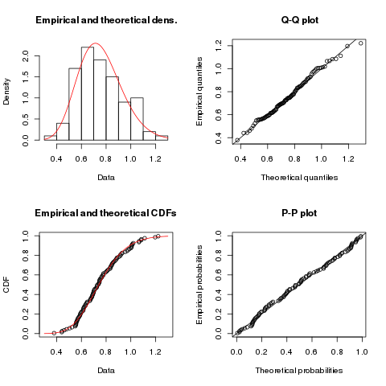

Studying and tackling noisy fitness in evolutionary design of game characters
Merelo
, Castillo, Mora, Fernández-Ares, Esparcia-Alcázar, Cotta, Rico
GeNeura
+
CITIC
for
ECTA
. Watch this at
http://goo.gl/s4xDNh
We live in a noisy world
And games are even noisier
The outcome of a game is uncertain
"Eleven against eleven, and Germany wins"
How can you optimize game strategies
If you don't even know which strategy is the best
Noises have colors

Open Science!
All source, parameters for experiments, data available from
TODO
Thanks a lot for your interest
Any question?
Download/fork this presentation from
TODO
Use
arrow keys
or
space bar
to navigate